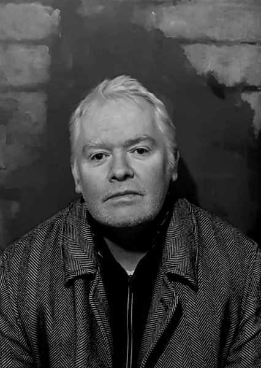
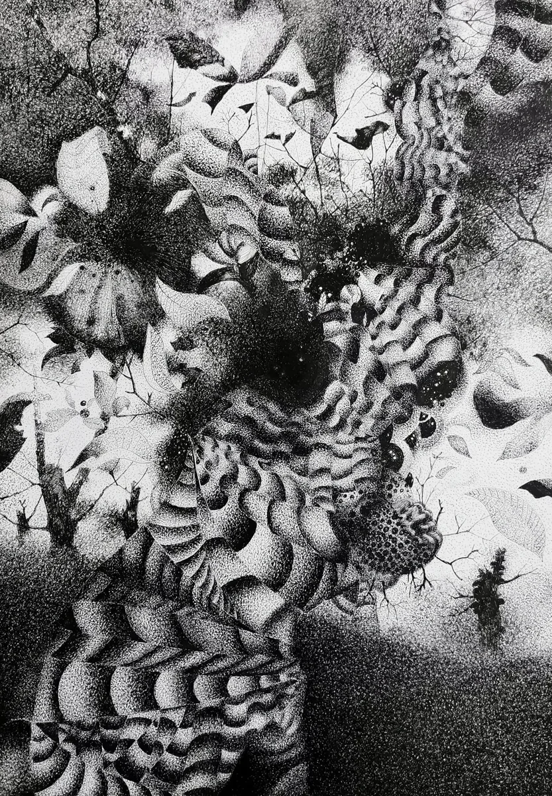

Paul Kerr
Everything seems filled with mystery, and that is the starting point for all my art.
Works
4 artworks
 Things That Go Unseen2026 · Oil on canvas · 100 × 70 × 3 cm€9,250
Things That Go Unseen2026 · Oil on canvas · 100 × 70 × 3 cm€9,250 Life Goes On2021 · Oil on gessoed fabriano paper mounted on board · 120 × 84 × 3 cm€6,950
Life Goes On2021 · Oil on gessoed fabriano paper mounted on board · 120 × 84 × 3 cm€6,950
Resurrection Of The Roadkill2024 · Pen and ink on paper · 60 × 42 × 2 cm€2,800 The Creation Of Adam2026 · Acrylic on canvas · 70 × 50 × 3 cm€4,500
The Creation Of Adam2026 · Acrylic on canvas · 70 × 50 × 3 cm€4,500
About Paul
I was born in 1965 in Dungannon, Co Tyrone. My passion for art began in my early teens and became an obsession by the time i was accepted for art college in 1983. Unfortunately i was unable to go as my life took a different direction . It would be another decade or more before i returned to art.
I moved to Dublin in 1996 determined to pursue my artistic life and have been painting professionally since then. My first solo show was with the Gordon Galleries , Derry in 1996 and my most recent have been with Sol Art Gallery, Dublin in 2018, 2022 and 2024. In between I've had numerous solo and group shows including the RHA Annual 2019, exhibiting in London , New York, Florence, Milan and Beijing, plus residencies and awards.
The gap that occured in my art practice when i was young was driven by a religious calling. Although i am no longer on that path i still seek the mystery and the divine in my paintings and drawings. I try to find the connections in everything with the realisation that reality is always beyond me. Imagination brings me closest to that understanding. I rely only on that inner vision and the craft i've learned, never resorting to artificial means.
Perhaps its best put by the art critic Michael J. Pearce Ph.D. MFA who interviewed me for Mutual Art Magazine:
" For Kerr paints at the threshold of the otherworld and opens himself to the inspiration he is gifted by the lush land."
"The Irish woodlands are the setting of many of Kerr's paintings,which drift from anchored realism into dreamy visions. One stroke leads to another, he says, and nature prompts him to make new marks. Under each finished picture there are five more which he has painted over in the process of finding the image- they are revelations of what lies hidden within the trees.
Kerr shows us how nature knows itself."
Interested in Paul Kerr's work?
Send an enquiry through PlotArt and we'll put you in touch with the artist.
Enquire through PlotArt